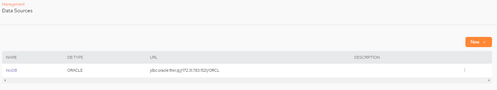
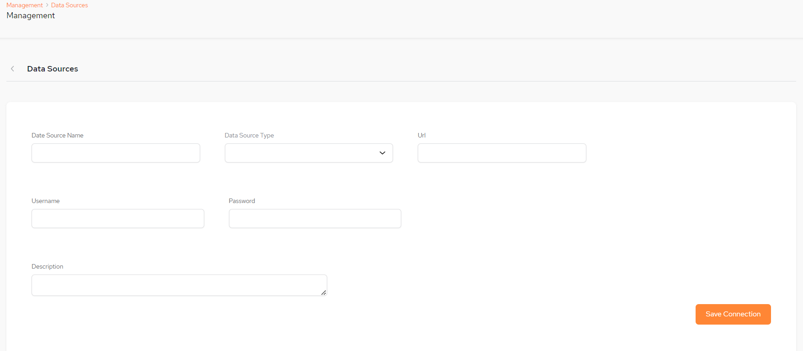
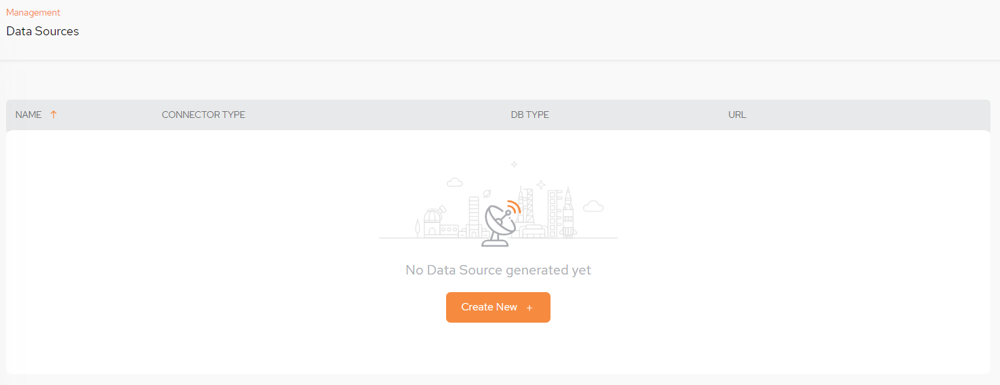
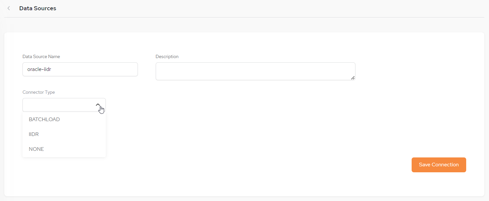
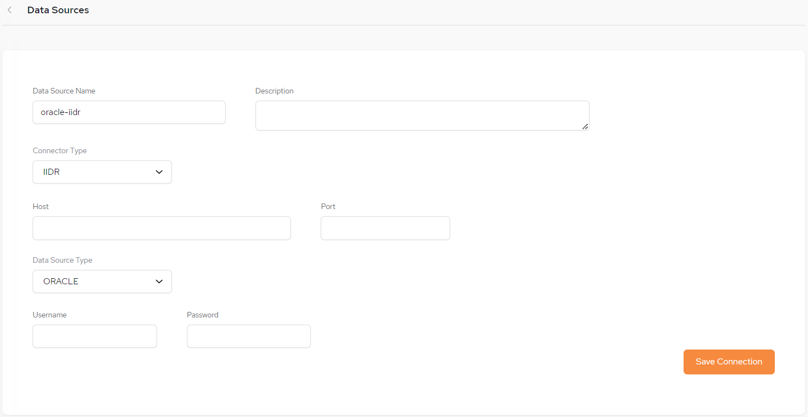
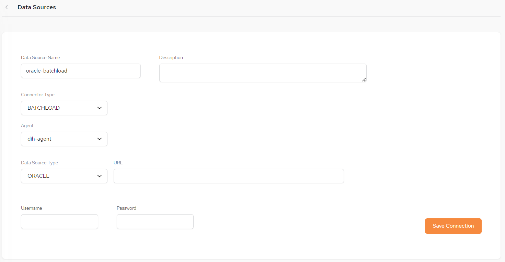
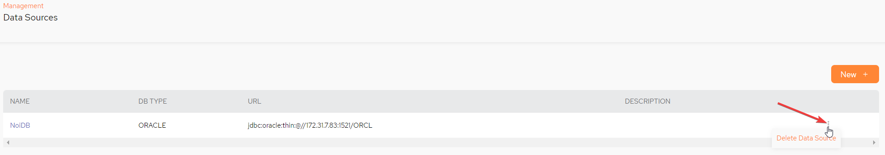
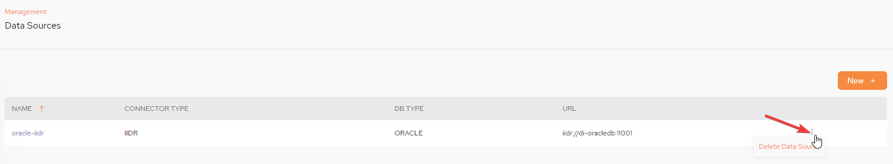

Data Sources define the origin of data in the System of Record. A data source is a reference to a particular database or data store.
It is a logical representation of the connection to the actual source.
When we define a
The initial Data Sources screen displays a list of available data sources.

NAME – The name you define for the data source
The data source name is not case sensitive and has no limits for naming
DB TYPE – The database type for the data source, as defined in the System of Record
URL – The URL for the data source
DESCRIPTION – A free-format description of the data source
To setup a new Data Source click New +:
The Configuration screen will then be displayed:

Date Source Name – The name you define for the data source.
Data Source Type – The database type for the data source, as defined in the System of Record. Example, ORACLE, MSSQL.
URL – The URL for the data source.
Username and Password – The credentials for accessing the data source.
Description – A free-format description of the data source.
Enter the configuration details and click Save Connection, The new data source will now be listed on the main Data Sources screen.
The initial Data Sources screen.

To setup a new Data Source click Create New +: or New + if a data source already exists.
The initial Configuration screen will then be displayed.

NAME – The name you define for the data source
The data source name is not case sensitive and has no limits for naming
CONNECTOR TYPE – The connector type - select either IIDR or None.
CONNECTOR TYPE – The connector type - select either IIDR, BATCHLOAD or None.
For using Batch Load, the following configuration parameters need to be used the helm command during Kubernetes installation. global.batchload.enabled=true, batchload-agent.enabled=true
If you select Connector Type IIDR the following setup screen is displayed:

Date Source Name – The name you define for the data source.
Description – A free-format description of the data source.
Connector Type – In our example, for an Oracle database, IIDR has been selected.
Host – The Host for the data source.
Port – The Port assigned for the data source.
Data Source Type - Options are ORACLE, MSSQL, DB2ZOS, DB2I
Username and Password – The credentials for accessing the data source.
Enter the configuration details and click Save Connection, The new data source will now be listed on the main Data Sources screen.
Refer to our batch load page for more details.
If you select Connector Type Batch Load the following setup screen is displayed:

Date Source Name – The name you define for the data source.
Description – A free-format description of the data source.
Connector Type – In our example, for an Oracle database, BATCHLOAD has been selected.
Agent - Select the batch load agent being used (use a different agent for each pipeline).
For using Batch Load, the following configuration parameters need to be used the helm command during Kubernetes installation. global.batchload.enabled=true, batchload-agent.enabled=true. If an additional agent is required, the this helm command needs to be used: batchload-agent.agent.name=[name of agent]
Data Source Type - Currently only ORACLE is available.
URL - URL of the Data Source.
Username and Password – The credentials for accessing the data source.
Enter the configuration details and click Save Connection, The new data source will now be listed on the main Data Sources screen.
There is an option to delete a data source by clicking the kebab menu (vertical three-dot menu) on the far right of the main Data Sources menu and clicking Delete Data Source:


After you create the data source, you can